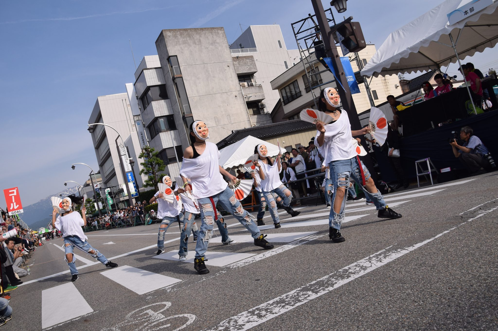
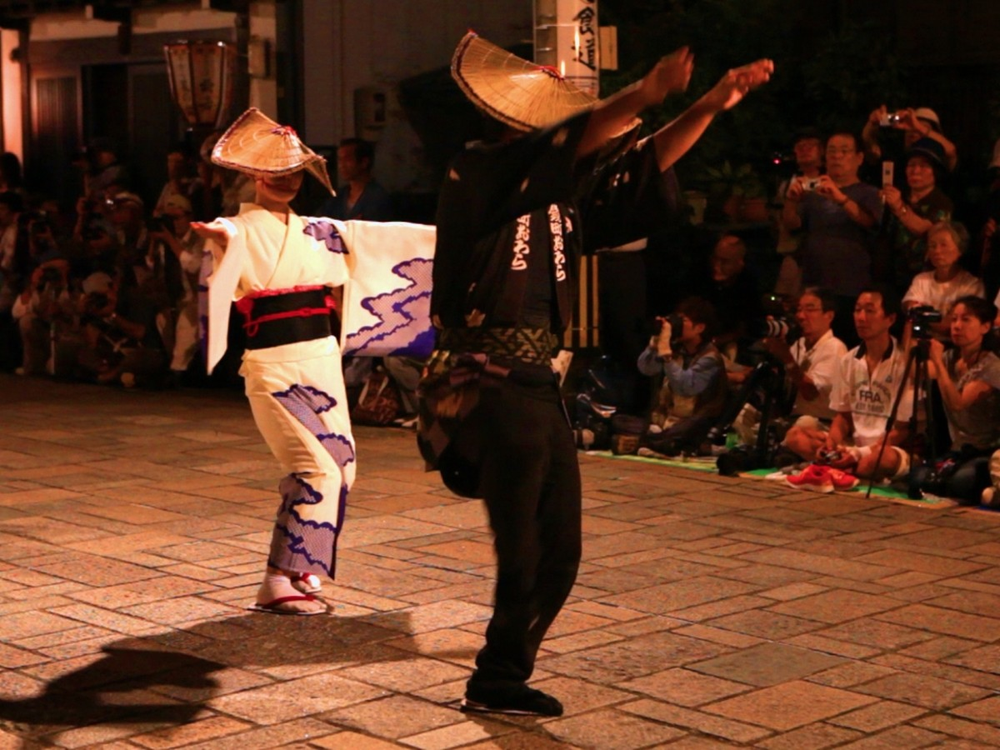
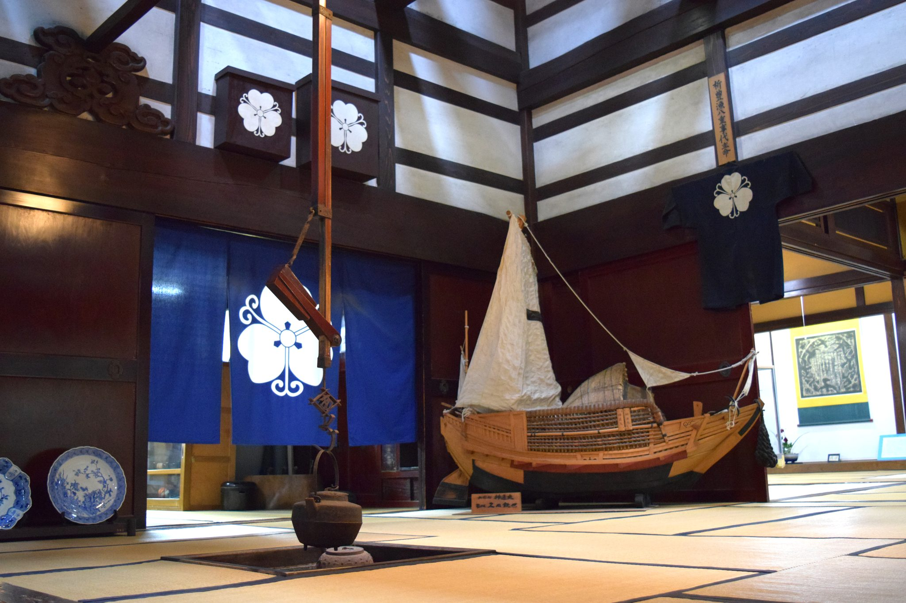
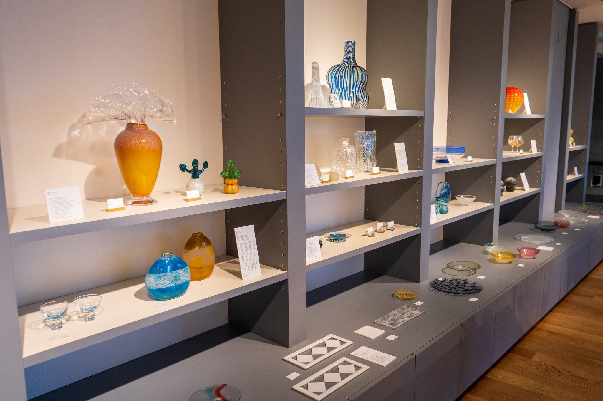
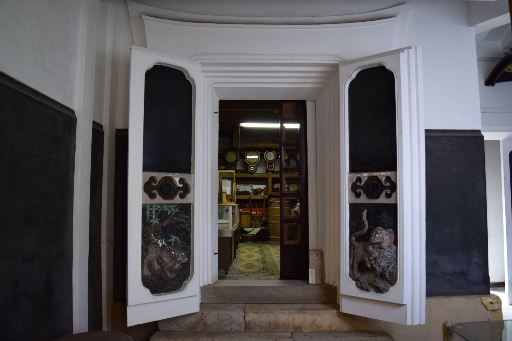

代
二つを入れ替え
一つ目と二つ目の漢字を選び、選んだ内容を画面に表示します。確認してから位置を入れ替えます。
漢字をそろえ、富山の景色をめぐる落ち物パズルです。


01 ゲームの目的
縦か横に、同じ漢字を三つそろえると消えます。
漢字を消して得点を重ね、富山城の景色が移り変わる様子をお楽しみください。



02 漢字と富山
高岡銅器の錫、井波彫刻、越中和紙、組子細工、ガラス工芸。まるで、伝統工芸の手仕事と重厚感が、一文字一文字の漢字に刻まれたようだ。



03 基本操作
04 得点と景色
100点ごとの区切りで、背景の景色が変わります。
得点を重ねるたびに、富山城の写真が次の景色へ切り替わります。富山の穏やかな風景を楽しみながら、さらに高い得点を目指してください。
05 特別な力
同じ漢字を三つそろえると、特別な力がこめられた「特の符」が手に入ります。
一つ目と二つ目の漢字を選び、選んだ内容を画面に表示します。確認してから位置を入れ替えます。
消したい漢字を一つ選ぶと、盤面にある同じ漢字をまとめて消します。落下後に漢字がそろえば、連鎖が始まります。
06 公式SNS
ハイスコアの感動などを、SNSで伝えてみませんか。
ハイスコアの投稿、お気に入りのプレイ画面の保存、バグ報告、お問い合わせに利用できます。
 公式X@kiboukanji429
公式X@kiboukanji429 公式Instagram@26kibou4kanji29
公式Instagram@26kibou4kanji29URLまたはQRコードから、スマートフォンのブラウザで遊べます。ダウンロードや料金は必要ありません。
FEEL THE HOPE INSIDE
2026年4月29日
OFFICIAL RELEASE
PHOTO CREDITS
音響
PRODUCED BY Team Shiob
© 2026 Team Shiob All Rights Reserved.